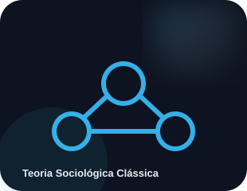

IDEIA 01
Pai da Sociologia
Auguste Comte cunhou o termo "sociologia" no século XIX, propondo um estudo científico da sociedade.
Uma trilha visual para estudar sociologia com conceitos em camadas, exemplos e descobertas que ajudam a fixar o conteúdo.

Marx, Durkheim e Weber.
↗TÓPICO 02Classes sociais e desigualdade.
↗TÓPICO 03Identidade, diversidade e cultura de massa.
↗TÓPICO 04Lutas por direitos e cidadania.
↗TÓPICO 05Família, escola, religião e Estado.
↗TÓPICO 06Divisão do trabalho e mudanças no emprego.
↗Auguste Comte cunhou o termo "sociologia" no século XIX, propondo um estudo científico da sociedade.
Para Émile Durkheim, fatos sociais são formas de agir e pensar exteriores ao indivíduo, mas que o coagem.
Max Weber relacionou valores religiosos ao desenvolvimento do capitalismo moderno.
Observe o cotidiano. Depois avance em ordem ou escolha o tópico que você precisa revisar agora. As páginas são independentes para facilitar o estudo rápido.